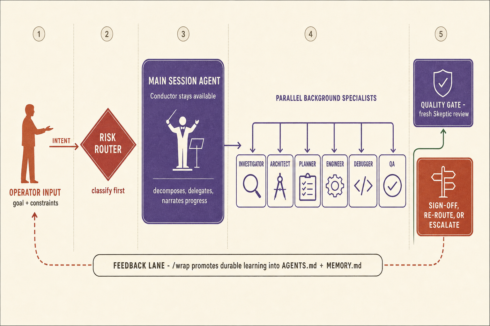
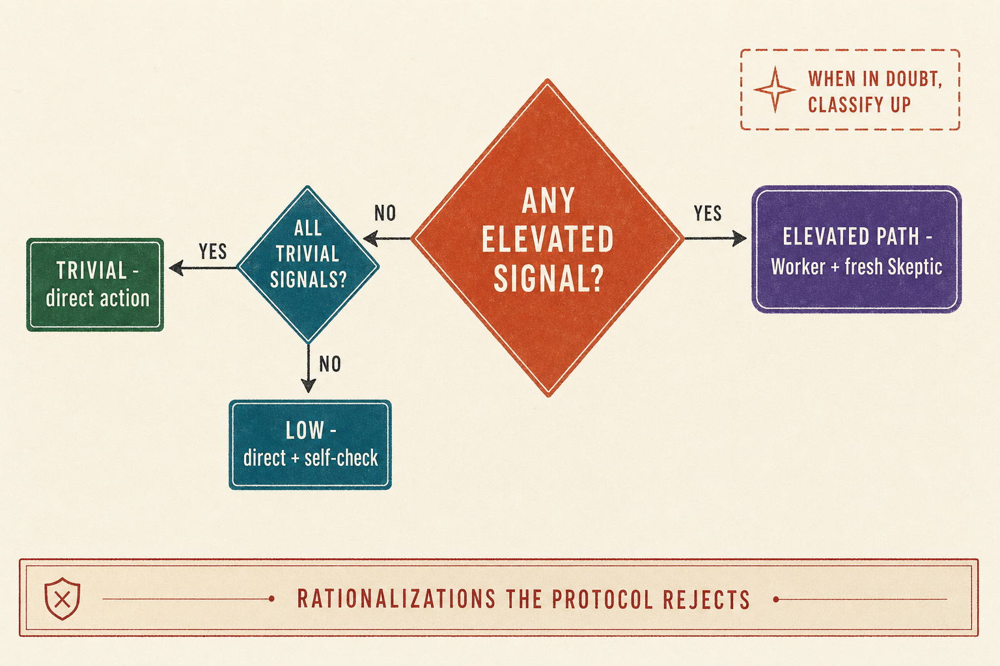
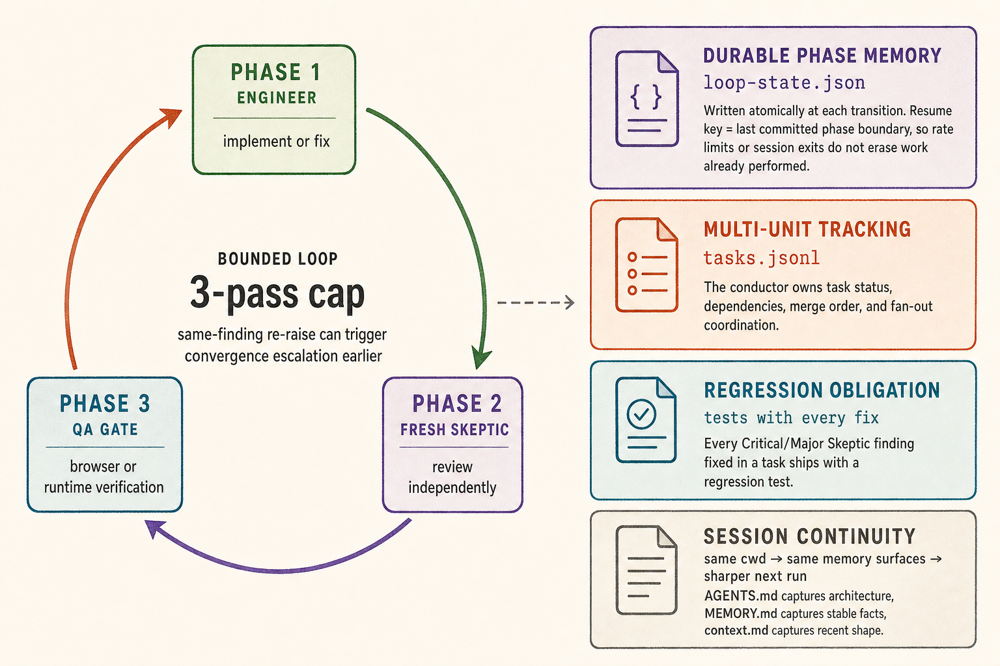

Infographics
Three visual maps of the ideas that make the harness work
The methodology is more than "use lots of agents." These diagrams show the real center of gravity: operator-attention routing, strict risk-based delegation, and durable review loops that survive long-running work.
Conductor stays free
Fresh Skeptic every round
When in doubt: Elevated
Loop state survives interruptions
Attention Architecture
conductor, not implementer
How the system routes scarce human attention
The human supplies intent and judgment. The conductor classifies risk, keeps context light, fans work out to specialists, and only lets reviewed output move forward. Memory flows back into the next session so the system compounds instead of restarting cold.

Decision System
risk drives orchestration
The risk router decides the whole shape of execution
The methodology does not ask, "How many lines is this?" It asks what kind of mistake is possible. One Elevated signal is enough to move the task into Worker plus Skeptic territory, and the default under uncertainty is to classify upward, not downward.

Durability
bounded loops, recoverable state
Long-running implementation loops can stop, resume, and keep their memory
The distinctive move here is not just review, but durable review. The conductor tracks loop state at phase boundaries, carries findings forward across attempts, and promotes lessons into future planning so the system gets harder to fool over time.

Is It Working?
The protocol is passive. You know it's running when you see narration like this.
There is no dashboard and no daemon. The session agent classifies each task and delegates in the background, narrating as it goes. If you see phrases like these, it's working.
example session narration
Routing this through orchestration-planner first...
Spawning architect to produce a plan...
Handing the architect's plan to engineer...
Spawning engineer to implement the cache layer...
Handing off to skeptic for adversarial review...
Spawning debugger on the failing test...
QA engineer verifying acceptance criteria in the browser...
If you see none of this, the task was classified as a small, reversible Direct action and handled in the main thread without a subagent. That is the protocol working correctly on a cheap task, not a sign that it is off.
Tuning Skeptic overhead: the default profile works for most projects. Add
agentic-engineering-profile: relaxed to a project's
AGENTS.md for faster iteration with less review, or
strict when correctness is paramount. See
Risk Profiles for the full breakdown.
Skill-based entry point auto-triggered for engineering tasks
The system uses a skill-based architecture. The global ~/.claude/[AGENTS|CLAUDE].md is minimal - just personal preferences and pointers to available domain skills. The real entry point is the /agentic-engineering skill, which auto-triggers when engineering tasks are detected and loads all rules and protocol references. This keeps always-loaded context small while giving the full methodology to sessions that need it.
~/.claude/[AGENTS|CLAUDE].md always loaded
- Minimal global file - personal preferences and a list of available domain skills.
- Does not contain the full methodology. Keeps always-loaded context small.
- Contains behavioral overrides: complete tasks fully before stopping, no PR footer emoji
- Exempt from the 40-line limit that applies to project root AGENTS.md files
~/.claude/skills/agentic-engineering/SKILL.md always loaded (on engineering tasks)
The /agentic-engineering skill is the actual entry point. It auto-triggers when engineering tasks are detected and loads the three rules files and reference docs via the skill directory. Canonical source in ~/agentic-engineering/.claude/skills/agentic-engineering/. Content detailed in the Protocol Layer below.
Skill directory layout: ~/agentic-engineering/.claude/skills/agentic-engineering/rules/ (agent-methodology.md, code-standards.md, conventions.md, module-manifest.md) and ~/agentic-engineering/.claude/skills/agentic-engineering/references/ (skeptic-protocol.md, subagent-protocol.md, agent-team.md, design-goals.md, regression-test-obligation.md, qa-regression-obligation.md, doc-sync-obligation.md)
Multi-adapter: The ~/agentic-engineering repo ships adapters for Claude Code (.claude/), Cursor (.cursor/), Codex CLI (.codex/), Gemini CLI (.gemini/), Kimi Code CLI (.kimi/), OpenCode (.opencode/), and Pi/oh-my-pi (.omp/) - the same methodology in each tool's native format.
Per-project override: Each project has its own root AGENTS.md (~40 lines) + subdirectory AGENTS.md files for deeper context. AGENTS.md files can override any global rule. The global layer provides the foundation; the project layer customizes it.
Activation modes: the installer writes
~/.claude/agentic-engineering.json with
{ "mode": "opt-out" | "opt-in", "profile": "relaxed" | "default" | "strict", "set_at": "<ISO8601>" }.
opt-out (default) runs the methodology everywhere except projects that declare
agentic-engineering: opt-out in their root
AGENTS.md.
opt-in keeps the methodology dormant until a project declares
agentic-engineering: opt-in. The per-project marker is a single case-insensitive line, matched as a whole line with optional leading
- . A short Activation preflight at the top of every skill and
/-command reads the config plus the project marker; if the combination says inactive, the skill no-ops silently and falls back to default tool behavior for that session. Missing config or missing
AGENTS.md both resolve to "mode=opt-out, marker=none" - the methodology proceeds, preserving behavior for users who installed before this feature existed. The
profile field controls Skeptic overhead - see
Risk Profiles below.
First-activation notice (Step 5): on first activation in a TTY session, the preflight prints a one-line notice naming the resolved
mode,
marker,
profile, and
preset, and points users at
/agentic-status and
/agentic-disable. The notice is gated on a race-safe per-project sentinel at
.agentic/.activated - exactly one of N concurrent subagents wins the create-only write and prints; losers stay silent. The TTY/QUIET gate (
AGENTIC_QUIET=1 or
not sys.stdout.isatty()) suppresses BOTH the notice and the sentinel write in CI, headless, and eval-harness contexts. Deleting the sentinel re-arms the notice only - it does not change activation state.
AGENTS.md - the cross-tool standard: AGENTS.md is the single source of project instructions. It is the cross-tool convention supported natively by OpenAI Codex CLI (
OpenAI AGENTS.md guide,
agents.md) and importable by Claude Code via its
@file import syntax (
Anthropic import-syntax docs).
Claude Code users: create a
CLAUDE.md at the repo root containing exactly one line -
@AGENTS.md - and Claude Code will import
AGENTS.md transparently.
Codex CLI users: Codex reads
AGENTS.md natively with no extra setup.
Result: one content source drives all adapters. No duplication.
Behavioral rules governing all work
agent-methodology.md always loaded
- Delegation model: conductor delegates, never implements
- Risk classification: Low vs Elevated
- Spawn threshold decision table
- Task decomposition: one agent, one task
- Planning artifacts: tiered Brief / Plan promotion gate (mechanical triggers: 2-5 Elevated units = Brief; 6+ or cross-track or multi-session = Plan)
- Worktree lifecycle management
- Pointers to detailed protocol docs
code-standards.md always loaded
- Tool discipline (Read/Glob/Grep over bash)
- Quality gates: lint, typecheck, test
- Per-language strict defaults
- Package management rules
- Browser verification via agent-browser
- Module manifests: required header block on non-trivial files (exports public symbol, ~50+ LOC, or side-effecting). Six fields: Purpose, Public API, Upstream deps, Downstream consumers, Failure modes, Performance
conventions.md always loaded
- Writing style (no em dashes)
- Project structure convention
- Git workflow (worktrees, PRs, branches)
- Session context + memory system
Referenced Protocol Documents (~/.claude/skills/agentic-engineering/references/)
skeptic-protocol.md on demand
subagent-protocol.md on demand
agent-team.md on demand
design-goals.md on demand
regression-test-obligation.md on demand
qa-regression-obligation.md on demand
doc-sync-obligation.md on demand
Not auto-loaded. Read on-demand when protocols are triggered (e.g., Elevated risk declared, Skeptic review needed).
Protocol Documents
Deep dive into the five canonical spec files in ~/agentic-engineering/.claude/skills/agentic-engineering/references/
design-goals.md on demand
Why the System Exists - 4 goals and explicit non-goals, written for evaluators and auditors.
The Four Goals
- Goal 1 - Responsiveness. Conductor stays free to respond. All work backgrounds. Spawn threshold is intentionally low. Never implement inline.
- Goal 2 - Adversarial accuracy. LLMs are systematically overconfident about their own outputs. Fresh Skeptic counters anchoring bias. Brief passed verbatim. No self-review path for Elevated work.
- Goal 3 - Cross-session continuity. Three tiers: context.md (ephemeral), MEMORY.md (stable facts), AGENTS.md (architecture). Stop hook auto-writes. /wrap enriches. No ceremony required from user.
- Goal 4 - Context window efficiency. Always-loaded files must be minimal. Trigger-pointer pattern: risk signals inline (chicken-and-egg), protocol details deferred until triggered.
Explicit Non-Goals
- No persistent memory of personal facts or preferences (project-affecting info only)
- Does not replace proper documentation (MEMORY.md is not a design doc)
- Does not automate irreversible operations at git/infrastructure boundary (human confirms)
- Does not guarantee correctness (defense in depth, not proof)
- Does not eliminate need for human judgment (escalation paths exist for ambiguity)
- Does not manage infrastructure or secrets
Evaluator questions for each goal:
G1: Does the main agent ever block or do substantial work inline?
G2: Is the Skeptic actually fresh each round? Is the brief verbatim?
G3: Is the Stop hook firing? Is MEMORY.md accurate? Is AGENTS.md lean?
G4: Would removing this line cause a wrong classification?
skeptic-protocol.md
on demand slidesThe Adversarial Review Methodology - 14 sections. The core quality mechanism.
The Core Loop (Sections 1-5)
- Worker implements → fresh Skeptic critiques → findings routed back → repeat until clean sign-off
- Fresh Skeptic every round - never continued from prior round. Independence requires clean context (no anchoring to Worker's justifications)
- Global-context input set (Section 4.5) - every Skeptic spawn prompt includes: architect plan, Brief/Plan artifact,
qa_criteria block, per-consumer impact table, related files, diff under review. Step 0 validates completeness before any review content is produced; incomplete inputs return BLOCKED. Supplemental reviewers (security-auditor, perf-analyst) receive a lexically distinct Supplemental-context block with no Step-0 enforcement.
- Resolved Issues Preflight prevents re-raising fixed items, but Skeptic can contest insufficient resolutions
- Same finding contested 2+ re-routes → escalate to human (prevents infinite loops)
- Simple/targeted changes: capped at 1 Skeptic round. Standard Elevated: 2-re-route limit
Findings Classification (Section 6)
- Critical - blocks sign-off. Security vulns, correctness failures, data loss paths
- Major - blocks sign-off unless Worker provides compelling documented reason to defer. Missing error handling, edge cases, design issues
- Minor - never blocks sign-off. Applied by a separate Worker after sign-off, no follow-up Skeptic needed
- Unclassified findings default to Major
Persistence Loop (inside /implement-ticket)
- Loop-aware, not one-shot -
/implement-ticket runs Engineer → Skeptic → QA as a bounded loop, not a single pass. Re-routes are a named primitive, not ad-hoc conductor judgment.
- Max 3 fix passes per phase - Skeptic loop (Phase 6) and QA loop (Phase 6b) each have an independent 3-pass cap. Hitting the cap escalates to the human; the conductor does not spawn a fourth pass.
- Findings accumulate - the
findings_log carries forward across iterations. A finding closed in iteration 1 cannot be silently re-raised as new in iteration 2; the Skeptic must explicitly contest the claimed fix using a [PREV: id] tag.
- Convergence failure - one re-raise of a Critical finding after a claimed fix triggers immediate escalation (does not consume remaining iteration budget). Signals a design-level conflict requiring human arbitration.
- Explicit escalation contract - the loop exits with a structured stall report (
cap_reached, convergence_failure, or blocked) listing open findings and recommended actions.
- Durable state - loop state is written to
.agentic/loop-state.json at every phase transition (atomic write). Long-running loops survive rate limits and session exits: on the next /implement-ticket invocation the conductor detects the interrupted state, applies a rate-limit wait if needed, and resumes from the last committed phase boundary. Schema includes brief_path, plan_path, and promotion_tier fields that record the planning artifact tier for the active task (used for mid-flight promotion and auto-promotion at the 3rd resume). No work is lost.
- Learning extraction - at Phase 6 clean exit (Skeptic sign-off), the
learning-extractor agent reads the resolved findings_log and writes structured fix-pattern entries to .agentic/learnings.md (append-only, dedup, cap 5/run). Each entry has ID LRN-YYYYMMDD-XXX, severity, domain tag, pattern description, fix guidance, and source reference. These entries feed into wrap-ticket at Phase 11b for richer MEMORY.md/decisions.md appends. Soft-fail only; never blocks the loop. During active sessions, the learnings-agent captures learning events in real-time (error→fix cycles, resolved Skeptic findings, discovered workarounds) and writes them immediately to .agentic/learnings.md, reducing reliance on manual /wrap.
- Task coordination surface - multi-unit orchestration plans use
.agentic/tasks.jsonl as a durable task coordination surface; the conductor tracks task status, dependencies, and loop state across the plan lifecycle. Applies to plans with 2+ tasks; single-unit spawns use in-context state only.
Parallel Fan-out slides
- N engineers in one message - when
orchestration-planner returns 2+ independent units, /implement-ticket Phase 5 fans out: one worktree-isolated engineer per unit, all spawned in a single message (parallel). N=1 falls through to the standard path.
- Per-unit P0 loops - each unit runs its own Engineer → Skeptic persistence loop inside its worktree. "Done" means Skeptic signed off, not first commit. The conductor joins only after every unit reaches a terminal state.
- Skeptic strategy driven by planner -
skeptic_strategy: per-unit: independent units each get their own Skeptic (can run in parallel). skeptic_strategy: integration: interdependent units share one Skeptic reviewing the combined diff - replaces Phase 6, not layers on top. skeptic_strategy: multi-dimensional: for high-stakes Elevated units (auth, payments, migrations, crypto) - fans out correctness-Skeptic, security-auditor, and perf-analyst in a single message on the same diff; all three must clear before sign-off.
- Join conditions - all-done (merge in
merge_order), partial success (merge green units, retry failed once at depth=1), total failure (escalate), blocked (escalate immediately).
- Sequential
--no-ff merge - unit branches merged in planner-specified merge_order. Conflict at any step: abort, stop remaining merges, spawn single engineer for sequential re-implementation. Post-merge integration quality check catches cross-unit failures.
- Task state in
.agentic/tasks.jsonl - conductor writes all entries (pending → in_progress → done/failed/blocked). Workers return summaries only. Crash recovery: in_progress entries on resume treated as failed, re-spawned with original brief from inputs field.
Planning Artifacts slides
- Promotion gate (mechanical) - sits between orchestration-planner output and the first engineer spawn. Trigger table: 0-1 Elevated units = no artifact; 2-5 Elevated units = Brief required; 6+ Elevated units OR cross-track OR multi-session = Plan required. Trivial units do not count toward thresholds. "Cross-track" = distinct depth-1 directories each with their own
AGENTS.md; cross-track or architecture-decision-constraining work additionally requires an ADR alongside the Plan.
- Brief template - one-screen (~15-20 lines) at
docs/planning/<slug>.md. Fields: Problem, Success criteria (max 4 bullets), Non-goals (max 3 bullets), Constraints (hard only), Verification (single non-skippable line - "cannot specify" blocks sign-off), Linked artifacts.
- Plan-tier directory -
docs/planning/<slug>/ containing brief.md, architect-plan.md, orchestration.jsonl, risk-register.md (<=10 lines), rollback.md (<=10 lines), verification-gate.md. Assembled from existing artifacts plus three short conductor-authored coverage docs.
- Verification gate non-skippable -
verification-gate.md owns the trigger (signal that verification failed); rollback.md owns the procedure. Any "cannot specify" entry blocks Skeptic sign-off until the planning gap is resolved.
- Mid-flight retroactive Brief - in-flight engineer is allowed to return; already-completed units are not retroactively re-reviewed; retroactive Brief is authored before the next engineer spawn and governs all subsequent units.
- 3rd-resume auto-promotion - a Brief-tier task on its 3rd resume per
.agentic/loop-state.json auto-promotes to Plan tier (mechanical, regardless of operator notice).
- Engineer contract additions -
brief_path and plan_path fields added to the Worker execution contract; engineer reads the Brief or Plan and treats success criteria + verification gate as authoritative alongside the architect plan.
- Interactive /brief path - Brief can also be authored interactively via
/brief before architect and engineer are spawned. When brief_path is pre-populated from a /brief session (brief_source: operator), the conductor skips Brief authoring at the promotion gate and uses a completeness-only Skeptic variant instead of the full framing review.
Cost-Aware Tier Routing
- Conductors declare Tier 1/2/3 at spawn time - routes lightweight tasks to faster models and critical reviews to max-capability models
- Tier 1 - cheap/fast (Haiku). Declare explicitly for shallow reads, existence checks, format-only tasks, and mechanical transformations
- Tier 2 - default (session model, Sonnet-equivalent). No declaration needed. Most spawns land here
- Tier 3 - max capability (Opus). Declare explicitly for security adversarial review, novel architecture design, full blast-radius analysis across an unknown codebase
- Declaration is documentation; the model param is enforcement - writing
Tier: 3 in the status block does not self-execute. The conductor must also pass model: "opus" in the Agent tool call. Declaration without the param produces Tier 2 behavior
- Codex/Gemini resolve tiers from
~/.agentic/tier-map.yml - Claude Code uses a built-in enum (haiku/sonnet/opus); no tier-map lookup needed for Claude
Domain Adversarial Briefs (Section 8)
- Smart contracts: reentrancy, access control, signature replay, fee bypass
- Auth/sessions: session fixation, token replay, privilege escalation
- API endpoints: malformed inputs, race conditions, missing validation
- Crypto: weak randomness, domain separation, algorithm confusion
- DB/migrations: idempotency, partial failure, rollback paths
- Data pipelines: double-processing, silent failures, state divergence
- Doc synthesis: internal consistency, assumptions, completeness gaps
- General code: logic errors, edge cases, incorrect assumptions
Elevated + Cleanup Path (Section 12)
- Worker → Skeptic sign-off →
/simplify → narrow-scope Skeptic
- For substantial implementations where code hygiene matters
- Second Skeptic reviews only the /simplify diff (behavioral preservation check)
New Skeptic Obligations
- Module manifest check - tiered enforcement on non-trivial modules (exports a public symbol, ~50+ LOC, or side-effecting): missing manifests are Minor (comprehension hygiene, non-blocking); stale manifests (no longer reflect purpose, public API, dependencies, or failure modes) are Major (blocks sign-off absent a compelling documented reason to defer); stale manifests whose inaccuracy could mislead a caller on a correctness or security path are Critical.
- Regression test verification - before granting sign-off when a Critical/Major finding was fixed, verifies a regression test was added (or a documented exception given). Missing test without explanation is a Major finding. The same verification applies to QA-fix iterations: a fix engineer addressing a qa-engineer FAIL must add a regression test or append a documented exception to
.agentic/qa-regressions.md (see qa-regression-obligation.md).
Cognitive Surrender Check
- A Skeptic that agrees with the Worker on every point with zero findings across two iterations is a possible rubber-stamp - the failure mode of treating the LLM as System 3 and outsourcing judgment rather than offloading mechanics.
- Cure: an audit-note Minor finding attesting that the Skeptic re-read the diff end-to-end with independent attention. The note documents what was checked, not what was wrong.
- Audit-note Minors are exempt from the
/implement-ticket Phase 6 re-raise and convergence-failure detection - they are bookkeeping, not contested findings, and must not stall the loop.
Calibration Layer (Section 13)
- The audit-note Minor is the per-spawn rubber-stamp defense. The calibration layer is the long-horizon backstop - aggregate drift detection without enlarging the per-spawn review surface.
- Findings counters in
events.jsonl - every Skeptic spawn_complete carries findings_count, diff_lines, signed_off, and iteration inside data. Conductor builds the merged JSON inline; subagents never write to .agentic/.
- 5% sampled meta-Skeptic - deterministic
hash(task_id+iteration) % 100 < 5. Background fire-and-forget; conductor declares the unit complete without waiting. Meta-Skeptic returns text only; conductor parses and emits meta_review_complete.
- Surfacing - Critical/Major divergence on a sampled spawn surfaces as one inline
META-DIVERGENCE: line at the next turn boundary. Original sign-off remains binding; the notice is advisory. Dual triggers: in-session (Phase 6 boundaries) and session-start sweep (catches async returns from prior sessions). The sweep paginates via .meta-divergence-last-sweep timestamp tracker — reads only events newer than the last sweep, capped to 100 lines on first run.
bin/agentic-calibrate - density (findings per 100 diff-lines, excludes zero-diff rows) and divergence (meta-Skeptic rubber-stamp rate). Warming-up line shown until 10 qualifying spawns observed.- Threat model: drift detection in a non-adversarial conductor relationship. Not cheating-prevention - a compromised conductor can mis-emit counts. Target is operator self-deception over time, not adversarial spoofing.
Core thesis: "The value of an adversarial reviewer is independence. A reviewer who has already heard the implementer's justifications is no longer independent."
The brief must be passed verbatim - never softened. Sign-off requires 4 elements: Reviewed, Findings, Active search attestation, and explicit sign-off statement.
Regression Test Obligation: Every Critical or Major finding that gets fixed without a regression test is a latent regression. The Worker adds a test that would have caught the failure; the Skeptic verifies it exists before sign-off. The test lives in the project's normal test suite, alongside existing tests for the affected module, so the same bug cannot silently reappear in a future change.
QA Regression Test Obligation: The symmetric rule for qa-engineer FAILs. When a fix engineer addresses a QA failure, it adds a unit/integration/e2e test that would have caught the failing scenario; the parallel Skeptic on the QA-fix iteration verifies it exists before sign-off. When a regression test is genuinely infeasible (visual conformance failure with no headless-testable observable, etc.), the engineer appends a curated entry to .agentic/qa-regressions.md so architects re-check the surface on future tickets via qa_criteria.scenarios[]. Canonical statement in qa-regression-obligation.md.
subagent-protocol.md on demand
The Orchestration Methodology - 11 sections. The outer frame governing delegation.
The Seven Rules
- Rule 1 - Always background. Most critical rule. Foreground blocks the conductor entirely. All delegated work runs in background.
- Rule 2 - Parallel by default. Independent tasks spawn simultaneously. "Can I start B before A finishes?"
- Rule 3 - Spawn threshold. Elevated risk → spawn. Low risk → direct action. When in doubt, Elevated.
- Rule 4 - Agent type discipline. Wrong type silently degrades. Bash agents can't spawn subagents or do file work.
- Rule 5 - Skeptic Protocol orchestrated by main agent. Architect plans must receive Skeptic review before acting on them.
- Rule 6 - Check in, don't disappear. Status updates immediately after spawning. Proactive reporting when tasks complete.
- Rule 7 - Direct actions permitted. Reads, git status, screenshots, memory answers, synthesizing returned results.
Composition Pattern (Section 6)
- Decompose into atomic units (one agent, one task, one prompt)
- Classify risk per unit independently
- Spawn in parallel for independent units
- Review scope: independent units get per-unit Skeptics; interdependent units get one integration Skeptic (sees combined diff)
- Mid-task re-decomposition if Worker discovers scope is too broad
Worktree Isolation (Section 7)
- Parallel agents writing to same repo MUST use
isolation: "worktree"
- Without it: concurrent
git checkout silently corrupts both agents' work
- Not needed for: single agents, separate repos, read-only agents
Anti-Patterns (Section 8)
- Foreground blocking (most critical violation)
- Sequential when parallel is possible
- Bash agents for implementation tasks
- Main agent doing implementation work
- "Looks simple" rationalization
- Softening adversarial briefs
Core principle: "The main agent is a conductor, never an implementer. The conductor is the main session agent: it decomposes work, spawns subagents that do the implementation and investigation, stays available to the user, and synthesizes results when those subagents report back."
The Subagent Protocol is the outer frame (should I delegate?). The Skeptic Protocol is the inner loop (is the output correct?).
agent-team.md on demand
The Team Playbook - 11 agent roles, 5 composed flows, decision rules, and spawn instructions.
The Team
16 named agents (investigator, debugger, security-auditor, architect, orchestration-planner, engineer, skeptic, qa-engineer, adr-generator, adr-drift-detector, perf-analyst, release-orchestrator, dependency-auditor, learning-extractor, wrap-ticket, learnings-agent). Most agents are read-only. Engineer, release-orchestrator, learnings-agent, and wrap-ticket write files. Full descriptions in the Agent Layer section below.
Decision Rules
- orchestration-planner when task is complex, agents/sequencing unclear, multiple phases
- architect when meaningful design decisions, unfamiliar codebase, multi-subsystem feature
- security-auditor when touching auth, sessions, tokens, secrets, privilege boundaries
- debugger when root cause not obvious, stack trace needs diagnosis
- Skip architect for well-understood changes → straight to engineer
- Skip debugger for already-understood bugs → straight to engineer
Spawn Requirements
- engineer: architect's plan + file paths + acceptance criteria + session context
- skeptic (plan review): adversarial brief verbatim + architect's complete plan + architectural constraints
- skeptic (code review): adversarial brief + engineer output + resolved issues preflight
- security-auditor: files changed + domain description + known mitigations
- All agents spawn in background. Main session is the sole orchestrator.
Mandatory gate: Architect plan output MUST receive Skeptic review before the plan is acted on. Do not spawn engineers or run the orchestration-planner until the Skeptic grants sign-off. A flawed plan propagates errors through every downstream Worker.
Specialized subagents spawned by the conductor
Planning and Analysis Agents
- investigator - traces data flow, maps blast radius, and explores unfamiliar areas. Used when you need to understand code before deciding how to change it. Returns an investigation brief for the conductor to hand to architect or engineer.
- architect - reads the codebase and produces a structured technical plan before any code is written. Identifies patterns, constraints, and evaluates approaches. Its output MUST be Skeptic-reviewed before any downstream work.
- orchestration-planner - given a complex goal, maps which agents to spawn, in what order, with what handoffs. Returns a structured execution plan the conductor follows directly. Used when the right agent combination is not obvious. Checks for
.agentic/tracking.md (resolver: .agentic/ preferred, legacy .claude/ fallback) in the project root and follows its instructions when present.
Diagnosis and Security Agents
- debugger - given a failing test or stack trace, forms and tests hypotheses to find the root cause. Returns a diagnosis plus a fix brief. Does NOT implement the fix - the engineer does that. If confidence is Low, escalates to human rather than guessing.
- security-auditor - applies OWASP Top 10 and CWE-category analysis. Assumes a capable attacker. Produces a structured findings report with severity ratings, specific code locations, and remediation guidance. Used in addition to (not instead of) the Skeptic.
Implementation Agent
- engineer - the primary agent that writes files. Reads codebase conventions, implements the change, runs quality gates (lint, typecheck, test), and returns a clear summary. Writes module manifests on non-trivial files and adds regression tests when fixing Critical/Major findings. Receives the architect's plan, file paths, acceptance criteria, and session context. Can return
NEEDS_CONTEXT, BLOCKED, or DONE_WITH_CONCERNS statuses.
Review Agent
- skeptic - adversarial reviewer. Always a fresh invocation (never continued from a prior round). Receives an adversarial brief and the Worker's output. Classifies findings as Critical/Major/Minor and provides structured sign-off. Also checks for DRY violations, duplication, and missed abstractions. Checks module manifests on non-trivial files with tiered enforcement (missing = Minor, stale = Major, stale-on-correctness/security path = Critical) and verifies regression tests were added for any Critical/Major fixes. The cross-cutting review role - its specialty is adversarial review itself, applied across every flow rather than producing a forward artifact.
Supplementary Agents
- adr-drift-detector - audits codebase compliance against Architecture Decision Records
- adr-generator - creates comprehensive ADRs with structured formatting
- qa-engineer - verifies changes in a real browser, runs test suites, validates against acceptance criteria. For UI-visible changes, spawned IN PARALLEL with the Skeptic (single message, both background) - sign-off requires both to pass.
- perf-analyst - profiles CPU, memory, and latency hotspots; produces a measured findings brief for the engineer. Does not implement fixes.
- release-orchestrator - sequences the full release from pre-flight gates through version bump, tag, deploy, and post-deploy verification. Enforces gates; refuses to proceed when any check fails.
- dependency-auditor - supply-chain review: CVE scanning, license compliance, and lockfile analysis across all detected ecosystems. Read-only; produces a findings brief for the engineer.
- learning-extractor - per-ticket learning extraction at Phase 6 clean exit. Reads the resolved
findings_log and writes structured fix-pattern entries to .agentic/learnings.md. Tier 1 leaf agent; soft-fail only.
- wrap-ticket - per-ticket learnings capture at Phase 11b (PR open). Reads the ticket's findings, diff, and conversation summary; appends durable learnings to MEMORY.md, decisions.md, and
.agentic/context.md (Recent Focus only). Constrained automated subset of /wrap; soft-fail only.
- learnings-agent - session-scoped background learnings capture. Spawned when the first learning-worthy event occurs in a session. Receives learning events as messages and writes structured entries to
.agentic/learnings.md immediately, with optional MEMORY.md append for project-affecting facts. Tier 1 leaf agent; soft-fail only.
Key constraint: Only the main session agent (conductor) spawns agents. No agent spawns other agents.
Isolation: Agents run in background by default. Can use isolation: "worktree" for git-isolated work.
Most agents are read-only. Engineer, release-orchestrator, learnings-agent, and wrap-ticket write files. Gold left border = writes files.
Standard Feature
Conductor
→
architect
→
skeptic
plan review (mandatory gate)
→
engineer
→
skeptic
code review
Security-Sensitive Feature
Conductor
→
architect
→
skeptic
→
engineer
→
skeptic
→
security-auditor
Bug Fix
Conductor
→
debugger
→
confidence?
→
engineer
→
skeptic
Low confidence → escalate to human
Complex / Ambiguous Goal
Conductor
→
orchestration-planner
→
Conductor follows plan
→
parallel/sequential agent spawns per plan
Low Risk (quick change)
Conductor
→
direct action
→
self-check
Trivial change
[any subagent state]
solo engineer Worker (isolation: worktree)
→
done (commit required)
Bypasses Skeptic entirely. Conductor availability drives the Worker/direct split.
Slash commands for specialized workflows
Skills are invoked via /skill-name in the chat. They expand into full prompts with multi-step workflows, often spawning their own Worker + Skeptic loops internally. Commands are defined in ~/agentic-engineering/.claude/commands/ and symlinked into ~/.claude/commands/. Agents are defined in ~/agentic-engineering/.claude/agents/ and symlinked into ~/.claude/agents/.
Dev Workflow Skills
- /skeptic - invoke the full adversarial review template. Provides the brief selection table and orchestration steps. The entry point for manually triggering Elevated review.
- /implement-ticket - bounded implement/review/QA loop. Runs architect, engineer, and skeptic phases in sequence for a scoped ticket.
- /ticket-status-sync - reconcile a ticket's tracker column with the actual state of its code after
/implement-ticket exits before merge. Fires the Done transition the default human-merge flow leaves unfired. Single-ticket or --all sweep; soft-fails on tracker API errors.
- /init-project - scaffolds the AGENTS.md hierarchy, settings, docs structure, and memory seed for a new project. Detailed in the Project Lifecycle section below.
- /wrap - enriches session context into context.md, memory entries, and AGENTS.md updates. Detailed in the Project Lifecycle section below.
- /memory-update - captures a specific architectural decision or stable fact into memory with its own Worker + Skeptic accuracy loop.
- /cleanup-worktrees - remove stale git worktrees created by parallel agent Workers.
- /update-agentic-engineering - sync methodology file edits safely across all adapters without destructive overwrites.
- /prune-harness - prune old eval runs from the internal harness to keep the results directory clean.
- /representation-audit - audit agent representation coverage across the methodology docs and slide decks.
- /test-suite-comprehension - given a directory or test target, returns a coverage map, verification gaps, and the highest-leverage places to add coverage. Pairs with the qa-engineer and the QA gate when coding is cheap and verification is the scarce thing.
- /agentic-cost - read-only consumer of
.agentic/events.jsonl. Renders per-agent and per-session token and wall-clock tables. Pricing is opt-in via ~/.agentic/pricing.yml; without it the CLI prints token counts only and never invents dollar figures. The Skeptic flags missing telemetry emits at instrumented boundaries as a Minor finding so cost dashboards stay accurate.
- /agentic-status - read-only resolver dump. Prints the resolved global config, project marker, profile, preset, and first-activation sentinel state. Useful for debugging "why is this project active/inactive?" and "which profile is in effect?" Writes nothing; always exits 0.
- /agentic-disable - explicit opt-out. Appends
agentic-engineering: opt-out to the project AGENTS.md (creating it if absent). Refuses to overwrite an existing opt-in marker without --force. Optional --global updates ~/.claude/agentic-engineering.json with mode=opt-out, preserving every existing key verbatim.
Content / Output Skills
- /pdf - read, extract, combine, split, rotate, watermark, or create PDF files
- /pptx - create or read PowerPoint presentations with PptxGenJS
- /docx - create or manipulate Word documents with professional formatting
- /xlsx - open, edit, compute formulas, chart, or create spreadsheets
- /frontend-design - create production-grade frontend interfaces with high design quality. Uses design system generation.
- /claude-api - build apps with the Claude API or Anthropic SDK. Triggers on anthropic/sdk imports. Covers tool use, streaming, batches, files API.
- /mcp-builder - guide for creating MCP servers that enable LLMs to interact with external services. Supports Python (FastMCP) and Node.
- /webapp-testing - verify frontend functionality using Playwright. Captures screenshots, browser logs, and validates UI behavior.
Per-project state that survives across sessions
Persistence Hierarchy (all at ~/.claude/projects/[hash]/)
- MEMORY.md always loaded - index of all memory files. Auto-injected into every conversation at startup. One-line pointers to individual memory files. Keep under 200 lines.
- context.md on demand - read at session start for continuity. Written by Stop hook (basic) or
/wrap (enriched). Supports rolling-window merge across 3 sessions.
- memory/*.md on demand - individual memory files with frontmatter (name, description, type). Read on-demand when relevant to the current task.
- Tasks - in-session progress tracking. Not persisted across sessions.
- Plans - in-session alignment with user. Not persisted.
Memory Types
- user - role, goals, preferences, knowledge level. Helps tailor collaboration (senior engineer vs first-time coder).
- feedback - corrections and confirmations. "Don't mock the database" or "yes, the bundled PR was right." Includes Why and How to apply.
- project - ongoing work, goals, deadlines, decisions. "Merge freeze begins 2026-03-05." Includes Why and How to apply.
- reference - pointers to external systems. "Pipeline bugs tracked in Linear project INGEST." Where to look, not what's there.
What NOT to save in memory
- Code patterns, architecture, file paths (derive from reading the code)
- Git history, recent changes (use
git log / git blame)
- Debugging solutions (the fix is in the code; the commit message has context)
- Anything already in AGENTS.md files
- Ephemeral task details or current conversation context
The Intent Layer. Orthogonal to the per-session / cross-session / project tiers above is the question of which artifacts capture what the project means to be. AGENTS.md, MEMORY.md, decisions.md, .agentic/qa.md, module manifest headers, and the optional glossary.md together form the project's intent layer - the source of truth for architecture, conventions, domain terms, and review obligations. Drift between code and intent is intent debt: a separate failure mode from technical debt (in the code) and cognitive debt (in the people), and the one most likely to silently degrade an agent-driven workflow. The Skeptic applies tiered enforcement to manifests (missing = Minor, stale = Major, stale-on-correctness/security path = Critical) and flags synonym-of-existing-term drift as Minor, so the layer self-heals as work passes through review without blocking sign-off on cosmetic gaps.
glossary.md - Ubiquitous Language (optional). A flat file at the project root listing the domain terms the project actually uses. Agents prefer existing terms over inventing synonyms; the Skeptic flags synonym-of-existing-term as a Minor finding. Borrowed from DDD's Ubiquitous Language idea - one shared vocabulary across code, docs, and conversation keeps the intent layer coherent across sessions.
⚠
Project Directory Is The Project Identity
How cross-session continuity actually works
Claude Code derives a project's persistence directory from the current working directory it was launched in. Every project's AGENTS.md, MEMORY.md, session history, and /wrap outputs live under ~/.claude/projects/[slug-of-cwd]/. The only thing you need to do to return to the same persistent state is start claude from the same directory.
The command:
terminal
$ cd ~/projects/myproject
$ claude
Optional: a shell alias to jump into the project and launch:
~/.zshrc
alias claude-myproject='cd ~/projects/myproject && claude -n myproject'
- →context.md stacks - the Stop hook writes to the same
~/.claude/projects/[cwd-slug]/context.md every time. /wrap's rolling-window merge works because the project slug is stable as long as you launch from the same directory.
- →MEMORY.md compounds - same cwd means the same project directory means the same memory files. Stable facts accumulate in one place rather than starting fresh each time.
- →The harness improves itself - this is the
/init-project -> work -> /wrap feedback loop. Each session reads richer AGENTS.md files and memory than the last because every session starts from the same directory and therefore loads the same files.
- →Multi-project coordination - different projects live under different cwds, so each gets cleanly separated persistence automatically. Running
/wrap on one project does not touch the other's state.
Naming and resuming are ergonomic, not load-bearing.
Claude Code's -n, --name flag attaches a display label to the session - useful in the /resume picker and in your terminal title, but it has no effect on which persistence directory is read or written. Two runs of claude -n myproject in the same directory create two independent sessions that share the same project persistence. The label is a finder, not an identifier.
-r, --resume is similarly narrow: it replays a specific prior session's conversation history. That is valuable when you got interrupted mid-task and the agent had working state that wasn't yet captured to memory, but it is not how cross-session continuity works under the protocol. The protocol prefers fresh sessions: one focused goal per session, /wrap at the end to commit learnings to memory, and the next session starts clean and reads those learnings via the normal cwd-based load. The Skeptic agent is the canonical example - it is explicitly never resumed, because a fresh context is sharper than a replayed one.
The thing that silently breaks continuity is not forgetting to name or resume a session - it is launching claude from the wrong directory. That points at a different project slug, which reads and writes a different, empty persistence directory. The fix is muscle memory: always cd into the project before starting Claude Code. An alias that bundles the cd and the launch is the cleanest way to make that automatic.
/init-project scaffolds, /wrap maintains
These two skills form a lifecycle loop: /init-project creates the harness structure at project start,
/wrap keeps it current as work happens. Together they ensure every session has accurate context and every project follows the same structure.
/init-project - Project bootstrap
What it creates
- Root
AGENTS.md (under 40 lines - lean by design)
[track]/AGENTS.md per subdirectory (backend, frontend, etc.).claude/settings.json + settings.local.json.agentic/qa.md (always created - TODO placeholders for unknown values).agentic/tracking.md (always created - read by orchestration-planner at planning time)glossary.md (optional - Ubiquitous Language; the project's domain terms; agents prefer these over synonyms)MEMORY.md seed in /.agentic/memory/.gitignore with secrets protectiondocs/ structure (overview, technical, planning, research)
How it works
- Interactive: asks project name, tracks, tools, DB, web UI
- Discovery scan: checks what exists before creating
- If AGENTS.md exists: curates in place (Worker + Skeptic)
- Extracts verbose rationale into MEMORY.md entries
- Never overwrites settings.local.json (may contain secrets)
/wrap - Session context enrichment
What it produces (4 outputs)
- context.md - session state: task focus, next steps, file paths, uncommitted changes, stashes, gotchas
- memory.md entries - stable facts: architecture decisions, conventions, persistent gotchas
- AGENTS.md updates - proposed additions to root and track AGENTS.md files (decisions, conventions, stack)
How it works
- Compiles session data (files touched, errors, decisions)
- Worker drafts all 3 outputs from raw session data
- Skeptic reviews for accuracy and completeness
- Main agent merges drafts into existing files inline (rolling window for context.md, semantic dedup for memory.md) - subagents cannot reliably get write permissions
- Compresses always-loaded memory files when they grow past a size threshold (Worker + Skeptic loop guards against fact loss, with rolling backups as a safety net)
- Cleans up stale worktrees as final step - backed by the
/cleanup-worktrees skill
Concurrent-run protection (wrap.lock)
/wrap acquires a project-local lock at <cwd>/.agentic/wrap.lock before writing any shared files. This prevents two simultaneous /wrap runs from clobbering each other.
- Lock acquisition - atomic
mkdir (POSIX-safe); owner file written immediately with a UTC timestamp.
- Live lock (under 30 min old) - /wrap waits, polling every 5 seconds. Reports once to the user: "Another /wrap run is in progress. Waiting..." When the lock disappears it retries acquisition once. If a third session grabbed the lock between the poll and the retry, /wrap aborts with a live-lock message rather than waiting again.
- Stale lock (30+ min old) - /wrap does NOT auto-remove the lock. It reports the lock path, pid, and timestamp, instructs the user to remove it manually (
rm -rf <cwd>/.agentic/wrap.lock), and aborts.
- Unreadable/malformed owner file - if the owner file is missing, unreadable, or contains no valid timestamp, /wrap treats the lock as stale, reports the lock path, instructs manual removal, and aborts.
- No PID liveness check - the timestamp is the authoritative signal;
ps -p is omitted because Claude Code process hierarchies make PID reuse unreliable.
- Lock release - mandatory on every exit path (success, escalation, or abort). If /wrap aborts before acquiring the lock, no release is needed.
/brief - Interactive planning dialogue
What it does
- Auto-triggered by the conductor when it detects exploratory framing ("I want to build...", "thinking about...", "let's design...") using the surface-and-proceed pattern
- Multi-turn dialogue: intent capture, scope-specific gray-area menu, per-area Q&A, Brief draft, iteration, write and hand-off to architect
- Produces
docs/planning/<slug>.md committed directly on the conductor's current branch before architect is spawned
- Sets
brief_source: operator in .agentic/brief-session.json so downstream Skeptic uses a completeness-only review (framing is already operator-confirmed)
- PRD express-path:
/brief --from <path> extracts Brief fields from an existing document; Verification field always requires operator input before writing
- Scope-creep guardrail defers new dimensions to a
deferred list; whole-pivot detection offers a restart or "continue with both" option
Using the scaffolded docs/ tree
How to use docs/overview, docs/research, docs/planning, and docs/technical
/init-project creates these folders as distinct documentation surfaces, not as four generic buckets. A good default workflow is:
explore in research/, decide in planning/, codify the accepted implementation truth in technical/, and publish the stable high-level summary in overview/.
For feature work, reuse the same progression with a feature-specific file or subdirectory instead of inventing a new structure.
docs/overview/ = what this is
- High-level project or feature summaries for humans and agents who need orientation fast
- Good home for onboarding docs, system maps, domain glossaries, and "start here" explanations
- Should stay short, stable, and low-detail; link outward to deeper docs instead of duplicating them
docs/research/ = what we learned before deciding
- Exploratory notes, option comparisons, constraints gathering, source material, and open questions
- Use when investigating a new subsystem, evaluating libraries, or collecting evidence before design
- Can be messy and provisional; once a direction is chosen, the conclusion should graduate into
planning/ or technical/
docs/planning/ = what we intend to build
- Pre-implementation design artifacts: feature specs, project plans, ADR drafts, ticket decomposition, migration plans
- This is the working surface for Architect and orchestration-planner output before code lands
- Keep open questions, trade-offs, and acceptance criteria here; once settled and implemented, move enduring truth into
technical/ and summarize outcomes in overview/
docs/technical/ = how it actually works
- Canonical implementation docs, contracts, runbooks, deployment details, invariants, and architecture that must match reality
- Write here after a design is accepted or a system is already in production and needs a durable reference
- Should read as current truth, not proposal text; remove unresolved debate language once a decision is made
Practical pattern for project and feature work:
start a new initiative in docs/research/feature-name.md if the problem is still fuzzy; promote the chosen shape to docs/planning/feature-name.md when you need a spec the team can execute; once implementation stabilizes, capture the lasting design in docs/technical/feature-name.md; if new teammates will need a short orientation, add docs/overview/feature-name.md as the front door.
Protocol fit:
Architect plans, orchestration plans, and proposal docs belong in planning/ while they are still decision-driving artifacts. /wrap should then promote the durable parts of those decisions into AGENTS.md and MEMORY.md so future sessions inherit the outcome without rereading every planning file.
Lifecycle flow
/init-project
→
AGENTS.md hierarchy + settings + docs/
→
Work sessions (features, bugs, etc.)
→
/wrap
Creates structure once
Agents use the harness
Enriches context + updates AGENTS.md
/wrap
→
context.md (session state)
+
memory.md (stable facts)
+
AGENTS.md updates
Next session reads all three → full context from turn one → work → /wrap → repeat
The feedback loop:
/init-project creates empty structure. Work fills it with decisions and conventions./wrap captures what was learned and feeds it back into the AGENTS.md hierarchy and memory. Next session starts with richer context. The harness improves itself over time - each session makes the next one better.
Separation of concerns:
context.md holds temporary session state (what's in progress, what's next).memory.md holds stable facts (architecture decisions, gotchas that persist).AGENTS.md files hold the canonical project description (structure, tools, conventions).- The Stop hook auto-writes a basic context.md every turn;
/wrap produces the enriched version when detail matters.
- Close the session cleanly so the Stop hook can finish writing
context.md: in the terminal CLI, use /exit rather than ctrl+c (ctrl+c can interrupt the hook and lose session state); in the desktop or web app, /exit is not available - just close the window or tab normally rather than force-quitting.
Git Workflow
Worktree isolation model
Standard Feature Branch Flow
conductor's feature branch
→
subagent worktree (branches from conductor)
→
merge back to conductor's branch
→
PR to main
→
merge + cleanup
Core Rules
- Conductor delegates every shippable edit to a worktree-isolated engineer. The conductor never edits shippable artifacts in its own checkout; worktrees are the execution location for all shippable changes. The conductor edits only exempt artifacts directly.
- Protected branches: never commit directly to
main, master, develop, or development. Exception: ~/agentic-engineering may commit and push directly to main.
- Base branch resolution: use
main if it exists, fall back to master, then develop, then development.
- Branch naming:
feature/<name>, fix/<name>, chore/<name>.
- Commit each fix immediately. Never accumulate uncommitted changes. After each validated fix: create branch, commit, PR, merge, pull - then start the next fix.
Worktree Types
- Subagent worktrees (
feature/*, fix/*) - one per parallel subagent, branched from the conductor's current branch, created at .agentic/worktrees/<branch-name>. The conductor merges and removes them after sign-off.
- Isolation worktrees (
worktree-agent-*) - created by the Agent tool when isolation: "worktree" is set. Removed after the conductor confirms no PR is needed.
- Conductor delegates shippable edits; it does not edit the shippable tree itself. Every shippable change runs in a subagent worktree branched from origin/main. The conductor edits only exempt artifacts directly.
Hands-off Configuration
Permissions that let Claude work without prompts - but not destroy data
The protocol assumes Claude can run most commands without interruption. That only works if the session is not constantly asking for permission. The pattern: set defaultMode to bypassPermissions, then use a tight denylist to block the handful of commands that are genuinely destructive. Everything else runs freely; the worst mistakes are still impossible.
The philosophy
- Bypass by default. Every confirmation prompt is a context switch. In hands-off mode Claude just runs the command.
- Deny the small set that cannot be undone. Force pushes,
rm -rf, hard resets, disk formatters, reboots. None of these have legitimate "I meant to" recoveries inside a session.
- The denylist is not a security boundary. It is a safety rail for a trusted agent on your machine. A determined prompt-injection attack can still run bad commands through creative obfuscation. Pair this with the Skeptic loop and the risk classification rules - the denylist is the last line, not the first.
~/.claude/settings.json snippet
{
"permissions": {
"allow": [
"Bash(*)", "Write", "Edit",
"Write(**/AGENTS.md)", "Edit(**/AGENTS.md)",
"Write(**/CLAUDE*.md)", "Edit(**/CLAUDE*.md)",
"Write(**/context.md)", "Edit(**/context.md)",
"Write(**/memory*.md)", "Edit(**/memory*.md)",
"Write(**/.claude/*.md)","Edit(**/.claude/*.md)",
"Write(**/.claude/*.json)","Edit(**/.claude/*.json)",
"Write(.claude/qa.md)", "Edit(.claude/qa.md)",
"Write(.claude/findings.md)","Edit(.claude/findings.md)",
"Write(.agentic/qa.md)", "Edit(.agentic/qa.md)",
"Write(.agentic/findings.md)","Edit(.agentic/findings.md)"
],
"deny": [
"Bash(git push --force*)",
"Bash(rm -rf*)",
"Bash(git reset --hard*)",
"Bash(git clean -f*)",
"Bash(sudo rm*)",
"Bash(dd if=*)",
"Bash(shutdown*)",
"Bash(reboot*)",
"Bash(mkfs*)",
"Bash(chmod -R 777*)"
],
"defaultMode": "bypassPermissions"
}
}
Drop into your global settings. The broad Write / Edit rules handle most tool calls; the file-specific globs silence overwrite confirmations for the files /init-project and /wrap touch most often (AGENTS.md, CLAUDE.md, context.md, memory.md, findings.md, deploy.md, compression-state.json, plus their rolling snapshots). The exact-path rules at the bottom (.claude/qa.md, .claude/findings.md, .agentic/qa.md, .agentic/findings.md) exist because the **/ prefix in the broader glob requires at least one parent directory segment, so files directly under a project-root .claude/ or .agentic/ dir don't match - without these, /init-project prompts on every fresh scaffold. Adjust the denylist to match the commands your workflow actually uses - if you force-push feature branches regularly, narrow that entry to main specifically.
When a denied command is actually what you want: disable the rule temporarily by editing settings, run the command, re-enable. Do NOT add a bypass hack that survives the session. The friction is the point - if you want to git reset --hard, a five-second edit is a fair cost for the protection the rest of the time.
Tune Skeptic overhead to match your workflow
Profiles let you dial how aggressively the system triggers Skeptic review. Set once globally and override per project. Three levels: relaxed for rapid iteration with less overhead, default for balanced day-to-day work, and strict for when correctness is paramount.
relaxed
For rapid iteration on well-understood UI or local bug fixes.
- Single-file locally-scoped behavioral edits: Low (no Skeptic)
- Multi-file pure-UI-only changes: Low (no Skeptic)
- Everything else unchanged from default
default
The starting point for all projects. Right for most day-to-day work.
- Single-file locally-scoped behavioral edits: Low (no Skeptic)
- All other legacy Elevated signals remain Elevated
- Multi-file UI-only changes: Elevated (Skeptic runs)
strict
For when correctness is paramount - payments, auth, shared infrastructure.
- UI-only copy changes: Elevated (Skeptic runs)
- File renaming: Elevated (Skeptic runs)
- Targeted wording fixes to already-reviewed content: Elevated (Skeptic runs)
- Diagnostic-only logging changes: Low with self-check (not unconditionally direct)
- Documentation-only file creation (new .md files that are pure lists/notes): Low with self-check (not unconditionally direct)
how to set your profile
# At install time
bash .claude/install.sh --profile=relaxed
# Edit ~/.claude/agentic-engineering.json directly
{ "mode": "opt-out", "profile": "strict" }
# Per-project override in root AGENTS.md
agentic-engineering-profile: strict
The central decision that drives everything
Low Risk → Direct Action
- Read a file / git status (confirming known fact)
- Answer from memory
- Take a screenshot
- Synthesize subagent results
- Diagnostic-only logging (zero behavioral effect)
- Documentation-only .md creation (pure list/glossary)
- Targeted wording fix to already-reviewed content
Elevated Risk → Worker + Skeptic
- Any code edit with behavioral effect
- Security / auth / crypto / payments
- Irreversible operations
- Architecture decisions
- Multi-file changes / new file creation
- External APIs / unfamiliar code
- Research producing an artifact
- Configuration changes
- Anything where a mistake costs time or data
When in doubt, classify as Elevated. "Looks simple" is not a Low signal. Mid-task reclassification is mandatory if Elevated signals appear during execution.
Common Rationalizations to Reject
- "This looks simple, I can do it directly." - Simple-looking tasks are where unreviewed errors accumulate most often.
- "It's only one file / a few lines." - Line count is not a risk signal. A one-line change to a shared utility has high blast radius.
- "I already reviewed it myself." - Self-review is for Low risk. It does not substitute for Skeptic review on Elevated tasks.
- "The Skeptic will catch any mistakes." - The Skeptic reviews Worker output. It does not excuse skipping risk classification or spawning a Worker.
- "We're moving fast, we can skip review this time." - The protocol exists precisely for times when speed creates pressure to skip it.
- "I'm following the spirit of the rule, just not the letter." - Violating the letter is violating the spirit. No exceptions.
Declaration Format with Planning Artifacts
The risk declaration optionally includes Brief: and Plan: lines when the promotion gate fires after orchestration-planner returns.
risk declaration example
Risk: Elevated - multi-unit feature
Tier: 2
Brief: docs/planning/<slug>.md
Plan: docs/planning/<slug>/
The Decision Flow
-
1
Before any task: classify risk (Low or Elevated)
-
2
If any single Elevated signal is present: declare risk, spawn Worker + Skeptic
-
3
If all signals are Low: act directly, then perform inline self-check (re-read in full, verify intent and side effects)
-
4
If self-check raises concerns: reclassify as Elevated mid-task
-
5
The
UserPromptSubmit hook enforces this - it fires before every action with a reminder to classify first
Cross-Reference
Wes Roth Video - "Claude Code Just Went Open Source"
Source: youtu.be/eR167BCL-4g —
Wes Roth covers Sigrid Jin's clean room rewrite of Claude Code ("Claw Code") and Jin's article on agentic harnesses.
The video's core thesis maps directly to this system's architecture.
Jin's Thesis: "The code is a byproduct. The system that produced it is the thing worth studying."
| Video Concept (Jin / Wes Roth) |
This System's Implementation |
Analysis |
"Claude Code is a harness"
The model is interchangeable; the harness is the value
|
AGENTS.md + skill rules + protocol docs = the harness definition.
The harness is model-agnostic instruction - it governs how any model works, not which model.
|
Direct parallel. This system IS the harness Jin describes. The rules, protocols, and agent definitions are the scaffolding that turns a raw LLM into a disciplined engineering system.
|
"Agents break work into tasks, assign roles"
Jin's OMX system decomposes and delegates
|
orchestration-planner decomposes tasks.
agent-team.md defines roles (architect, engineer, debugger, etc.).
Conductor follows the plan - spawns agents per the planner's output.
|
Same pattern. Jin's system auto-assigns roles among agents. This system has explicit role definitions with a human-designed decision table for which agent handles what.
|
"The human typed maybe 10 sentences into Discord"
Human provides direction, agents provide labor
|
"The main session agent is a conductor, not an implementer."
All substantial work delegated to subagents in background.
User gives high-level intent; system handles decomposition and execution.
|
Identical philosophy. The conductor pattern mirrors Jin's "human as director." The difference: this system's conductor is itself an AI agent (the main session), adding an extra orchestration layer between human and workers.
|
"Write code, test it, argue over it, fix what fails"
Closed development loop with self-correction
|
Composed flows: architect → skeptic (argue) → engineer (write) → skeptic (argue again).
Re-route on findings. Quality gates (lint, typecheck, test).
|
The Skeptic protocol is the "argue over it" step, formalized. Jin's agents argue informally; this system has a structured adversarial review with Critical/Major/Minor classifications and mandatory sign-off gates.
|
"ClawWhip - notification and event router"
Background daemon watching git commits, GitHub issues
|
Hooks system: UserPromptSubmit hook (risk classification gate), Stop hook (auto-saves context.md).
Git worktree lifecycle with cleanup triggers.
|
Partial parallel. ClawWhip is a persistent daemon; this system's hooks are event-driven within the session. Both keep monitoring outside the agent's context window. This system lacks a persistent background watcher between sessions.
|
"Architectural clarity, task decomposition, system design"
The skills that get more valuable as agents get stronger
|
Architect agent produces plans. Orchestration-planner handles decomposition.
Risk classification drives system design decisions.
Protocol docs encode architectural clarity as reusable rules.
|
This system is a concrete implementation of Jin's thesis. The protocols ARE the architectural clarity - codified into rules that any session can follow. The human invested time in system design (the harness) rather than individual code tasks.
|
"Multiple agents stay productive in parallel"
Coordination so agents don't collide
|
Subagent Protocol Rule 2: "Parallel by default."
Git worktree isolation prevents conflicts.
Multiple Claude Code sessions can work simultaneously on different features.
|
Git worktrees are the isolation mechanism that makes parallelism safe. Each agent gets its own copy of the repo. This is a pragmatic solution to the coordination problem Jin describes.
|
"You sleep, they work"
Fully autonomous overnight development
|
Context.md persists state across sessions.
MEMORY.md carries stable facts forward.
But: this system still requires human presence - the conductor prompts, Skeptic gates need human final approval.
|
Key gap. Jin's system is fully autonomous (Discord message in, shipped code out). This system is semi-autonomous - it handles decomposition and review internally, but the human remains in the loop for approval and direction. The tradeoff is quality control vs full autonomy.
|
Summary: This system implements 6 of the 7 core concepts Jin describes in his agentic harness thesis.
slides: contributing to this repo
The architecture is nearly identical in philosophy - conductor pattern, role-based agents, task decomposition, adversarial review loops, parallel execution with isolation.
The primary difference is autonomy level: Jin's system runs fully unattended (human sleeps, agents ship); this system keeps a human-in-the-loop at approval gates.
The secondary difference is persistence: Jin's ClawWhip is a persistent daemon; this system's hooks are session-scoped.
Other Adapters
Translating the methodology to Codex, Cursor, Gemini, Kimi, and OpenCode
The methodology is portable. The doc above uses Claude Code paths and slash commands. Other harnesses share the same delegation model, classification rules, and review protocol - but read from different paths and have different command and hook mechanics. Use this appendix to translate.
Codex CLI
Native AGENTS.md support - TOML agent format - hook system requires opt-in flag
| Surface | Codex equivalent |
|---|
| Project instructions | AGENTS.md at project root - read natively, no shim needed |
| Global instructions | ~/.codex/AGENTS.md |
| Skill location | ~/.agents/skills/agentic-engineering/SKILL.md |
| Slash commands | Not first-class. Command files live in .codex/commands/*.md but must be pasted or referenced manually - no auto-invocation via /wrap etc. |
| Agents | ~/.codex/agents/*.toml - TOML format (different from Claude Code's prompt-based spawn) |
| Hooks | ~/.codex/hooks.json - requires codex_hooks = true in ~/.codex/config.toml to enable |
| Stop hook / context save | stop-context-codex.js writes to ~/.codex/projects/[hash]/context.md |
| Activation config | Shared: ~/.claude/agentic-engineering.json |
| Tier resolution | ~/.agentic/tier-map.yml - no built-in Haiku/Sonnet/Opus enum; models resolved from the map |
What's different: Slash commands (/wrap, /init-project, etc.) do not auto-trigger. Reference the command files manually or paste their contents. The hook system is off by default - set codex_hooks = true before expecting Stop-hook context saves.
Cursor
Rule-file based setup - slash commands work - no native agent system
| Surface | Cursor equivalent |
|---|
| Project instructions | AGENTS.md (manual) or .cursor/rules/*.mdc files |
| Global instructions | ~/.cursor/rules/*.mdc with alwaysApply: true in frontmatter - no single global file |
| Skill location | No skill system. Rules are .mdc files in ~/.cursor/rules/ |
| Slash commands | ~/.cursor/commands/*.md - slash commands work natively in Cursor |
| Agents | Not available - Cursor has no native sub-agent system |
| Hooks | .cursor/hooks.json - beforeSubmitPrompt event for the risk-reminder equivalent |
| Stop hook / context save | Stop hook writes to the Claude Code path (~/.claude/projects/...) - not surfaced in Cursor sessions. Rely on manual context.md maintenance. |
| Activation config | Shared: ~/.claude/agentic-engineering.json |
| Tier resolution | Inherits the session model - no tier-map lookup |
What's different: No sub-agent spawn primitive. The conductor pattern works as a prompt strategy, but Cursor cannot fan out parallel Workers natively. Session context saves require manual maintenance - the Stop hook does not fire in a Cursor session.
Gemini CLI
GEMINI.md project file - TOML slash commands - agent files via @name mention
| Surface | Gemini equivalent |
|---|
| Project instructions | GEMINI.md at project root |
| Global instructions | ~/.gemini/GEMINI.md |
| Skill location | No skill system. Rules are inlined into ~/.gemini/GEMINI.md |
| Slash commands | ~/.gemini/commands/*.toml - first-class TOML slash commands; reload with /commands reload |
| Agents | ~/.gemini/agents/*.md with YAML frontmatter (kind: local) - invoked via @agent-name |
| Hooks | ~/.gemini/settings.json hooks key - BeforeAgent and SessionEnd events |
| Stop hook / context save | stop-context-gemini.js writes to ~/.gemini/projects/[hash]/context.md - fires on /exit only |
| Activation config | Shared: ~/.claude/agentic-engineering.json |
| Tier resolution | ~/.agentic/tier-map.yml - same as Codex, no built-in tier enum |
What's different: Context save only fires on /exit - force-closing the terminal loses the session context write. Commands use TOML format instead of Markdown. Agent mentions via @agent-name are the invocation primitive (no Agent tool call).
Kimi Code CLI
Project instructions in .kimi/ directory - skill invocation via natural language - hooks fully manual
| Surface | Kimi equivalent |
|---|
| Project instructions | .kimi/AGENTS.md inside the project's .kimi/ directory (loaded by Kimi via $KIMI_AGENTS_MD) |
| Global instructions | No global AGENTS.md equivalent. Global footprint is the skill at ~/.kimi/skills/agentic-engineering/SKILL.md (installed via install.sh) |
| Skill location | ~/.kimi/skills/agentic-engineering/SKILL.md - invoke via /skill:agentic-engineering or natural language |
| Slash commands | No custom slash commands. Use /skill:agentic-engineering <name> or natural language ("run wrap") |
| Agents | Built-in types only: coder, explore, plan. Agent files serve as reference prompts mapped to those types. |
| Hooks | ~/.kimi/config.toml [[hooks]] blocks - fully manual; the installer does not write this |
| Stop hook / context save | Manual - script path must be set by the user in the hooks config |
| Activation config | Shared: ~/.claude/agentic-engineering.json |
| Tier resolution | Inherits the built-in sub-agent type - no tier-map lookup |
What's different: No custom slash commands. No installer-written hooks - you must add [[hooks]] blocks manually to ~/.kimi/config.toml and configure the Stop hook script path yourself. Session context saves will not work until this is set up.
OpenCode
Native AGENTS.md support - per-adapter activation config - no hook system at all
| Surface | OpenCode equivalent |
|---|
| Project instructions | AGENTS.md at project root - read natively |
| Global instructions | ~/.config/opencode/AGENTS.md and/or instructions field in opencode.json |
| Skill location | .opencode/skills/agentic-engineering/SKILL.md (project-local) or ~/.config/opencode/skills/ (global) |
| Slash commands | ~/.config/opencode/commands/*.md - slash commands work natively |
| Agents | ~/.config/opencode/agents/*.md with mode: subagent and permission: frontmatter |
| Hooks | Not available - OpenCode has no hook system |
| Stop hook / context save | Not available - no session context save. Context must be managed manually. |
| Activation config | Per-adapter path: ~/.config/opencode/agentic-engineering.json (the only adapter with a dedicated config path) |
| Permissions | permission: per-agent in agent frontmatter; instructions: in opencode.json for global rules |
What's different: No hook system. The risk-reminder that fires on UserPromptSubmit in Claude Code is instead embedded in the skill content - there is no event-driven trigger. Session context is never auto-saved; manual context.md maintenance is required. Activation config lives at a per-adapter path rather than the shared ~/.claude/ location.